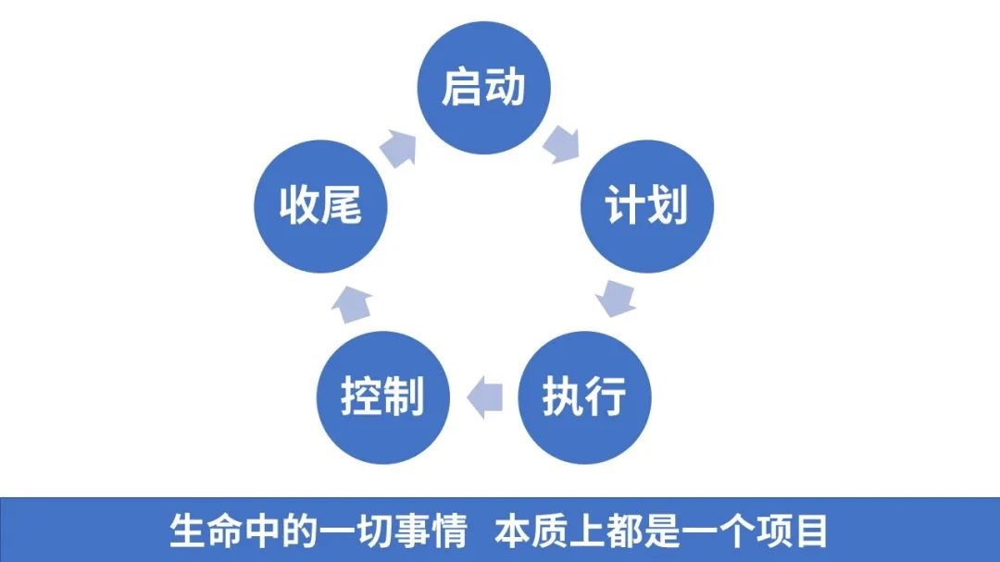

一 说明
- 本篇博客梳理了常用的业务层的流程术语和项目管理方向的总结,使得 SRE 和业务侧同学交流沟通时更加专业化
- 以下内容是覆盖了一些关键点,具体使用时灵活运用即可
二 项目管理模版
1 项目背景
- 介绍项目背景
2 项目目标
- 梳理项目目标
3 成员与沟通
- 梳理核心成员
- 梳理和汇总沟通群
4 实现路径
- 可以是表格形式，也可以是甘特图
- 每一行必须包含任务说明、责任人、排期(具体到天)、交付物、当前进度
5 周会记录
- 把每一次会议记录贴上去, 方便后期检索
三 体现专业化的词语
A 专业词语
1 漂亮词汇
- 收敛、治理、触达、覆盖、关键路径、存量问题、关键指标
2 漂亮句子
- 压测流程: 研发提供压测方法、压测机器人，QA 负责跟进压测和记录压测数据
- 做某个事情之前先回答要付出的成本和预计的收益(
投产比) - 推出新服务替代老服务,通常是先收口,再把存量实例迁移到新服务上
- 这个方案的风险、收益、参与项目的各方在什么时间点交付什么东西, 要明确下来
- 在交付时间点之前要及时同步可能出现的风险,交付完后有验收流程.
- 提出新方案者，要回答该方案是否满足产品需求
- 自己手上的任务,完成了要及时交付结果,没完成要及时说明没完成的原因和计划安排
- 内部运维工具不好用，如果有人提出来，那是工具开发者的锅，如果没人提出来而导致实际使用过程中发现故障，那是使用者的锅
- 一个好的监控系统要能够实现端到端的监控.
- 1 分钟发现问题，5 分钟定位问题，10 分钟解决问题.
- 某个工具的成熟度是否高，高的话才能在生产环境中使用
- 某个方案的落地性强不强.
- 去场景化的基础能力向场景化的服务能力延伸
- 持续地顺畅地高质量交付有效价值
- 很多细节被模糊掉
- 手工统计的数据容易出现精度问题
- 通用操作工具化、重复操作一键化
- 分析一个问题的
现状就是从工具、流程、角色3 个方面去分析, 然后从该问题的全生命周期(不仅是流程结束就结束了)去发现改进点 - 给客户提供多个方案模型,供客户选型.
- 提升 SRE 工作的先进性.
- 实施过程中要做好控量.
- 将一组商业目标转化为明确的可以实现的工程目标.
- 某项功能/事情,沉淀了很长时间, 现在可以 XXXX 了
- 他们的诉求点拆出来的其实是 XXXX
- 某个属性上可控、不可控, 比如
时间上不可控。通过什么方式来控制。某个属性达到了一比较高的程度。 - 某个功能具备了 ToB 产品化的能力。
B 各类导向
- 结果导向/目标导向
- 用户导向
四 项目管理总结
A 生命中的一切事情，本质上都是一个项目。
-
在项目管理中，第一个关键要素，就是： 循环。
-
既然是有头有尾的事情，就要：“用循环解决问题”。 循环过程分为 5 个步骤：
启动、计划、执行、控制(监控)、收尾。 - 1）何谓启动？ 这事儿值不值得干？我们要不要干？需要哪些人？需要多少钱？
- 2）何谓计划？ 这事怎么干？投入多少时间？谁负责什么事？什么时间节点完成什么结果？资金怎么分配？资源怎么调配？时间怎么分配？任务怎么分配？
- 3）何谓执行？ 既然分配了，那就按照公司战略完善高效执行下去，不要眼高手低。
- 4）何谓控制(监控)？ 谁在负责这件事情？做的进展如何？达成目标了吗？按照进度跟进了吗？
- 5）何谓收尾？ 无论成败与否，我们来复盘一下有什么经验？什么教训？ 这 5 个步骤，构成完整循环，且缺一不可。 凡事有交代的背后，是一组严密执行的步骤。

- 做事之前, 先和领导、同事对齐目标, 对齐评价体系(目标怎么衡量), 拆分任务、确定排期.
- 事中按评价体系及时汇报进度
- 事后及时复盘总结
B STAR 原则

STAR 原则(版本 1)
- 处境（situation）
-
- 在什么样的环境下
-
任务(task)
-
- 接到了什么样的任务
-
行动(action)
-
- 具体是怎么落地的
-
结果(result)
-
- 拿到了什么结果
STAR 原则(版本 2)
- 处境（STtuation）
-
- 在什么样的环境下
-
行动(Action)
-
- 采取了什么行动
-
结果(Result)
-
- 拿到了什么结果
四 各类强逻辑
1 过去现在未来
2 某个核心模型不是 XXXX，而是 XXXX
3 无论什么情况讲个 1、2、3
4 你有病啊我有药, 我们就成交。
- 不要着急回答别人的问题, 一定要搞清楚对方有什么病.
- 问就问痛点、说就说重点、答就答保证
- 见面就给免费午餐、报价就要高开低走、最后还要买菜送葱
5 做事要有依据, 做完要有证据.
6 任何时候、任何场景，都要先处理心情、再处理事情
- 1 处理心情 2 处理事情 3 处理事业
- 2 处理事情的时候，其实就是找全局性增量
-
- 没有的事情，从 0 到 1 做起来.
-
- 已有的事情，增效降本, 从 1 到 N。 极致的按需使用（砍掉一些不需要的、想尽办法做到自动扩缩容）。
7 每个人脑门上都有一个大大的要
- 所有人都想要：以最少的时间、金钱，换取最多的时间、金钱。
- 你让他过上好日子，他就支持你拥护你；你让他过不上好日子，他就反对你。
8 是什么、为什么、怎么办
- 太多场景下都可以使用这套逻辑